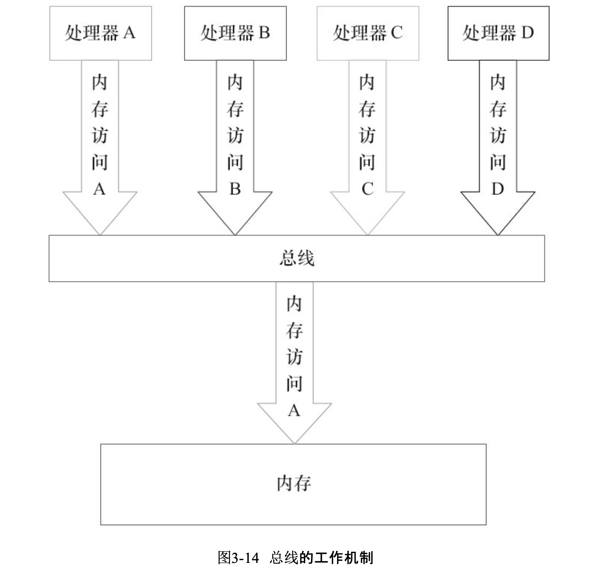

Java 并发编程概念
多线程编程概念
上下文切换
多线程是CPU通过给每个线程分配CPU时间片的方式来实现的。时间片即为分配给各个线程的时间，由于时间片非常短，所以CPU
需要不断的切换线程来执行任务，也就造成了多个线程同时执行任务的感觉。
但是为了CPU在切换回一个线程的时候能够继续之前的状态向下执行，在切换线程之前需要保存当前任务的状态。所以一次
上下文切换即为：保存上一个线程的执行状态，再加载下一个线程之前保存的状态。
而上下文切换所需要的时间，也是并发操作主要的开销。（另一个主要开销为 线程创建所需要的开销）
死锁
死锁总结来说就是 循环等待事件。可能是因为一些异常情况、或者复杂逻辑，某个锁一直没有被释放，导致其他等待这个锁的
线程一直在被动WAITING的状态中无法向下执行。
避免死锁的方法：
避免多个线程使用同一个锁，
避免一个线程在锁内同时占用多个资源，尽量保证每个锁只占用一个资源
尝试使用定时锁（Lock.tryLock(timeout)）来代替内部锁机制
对于数据库锁，加锁和解锁必须在一个数据库连接里，否则会出现解锁失败的情况
资源限制
- 硬件资源限制（如带宽限制、读写速度限制、CPU处理速度限制等）；软件资源限制（如数据库连接数、socket连接数等）
- 资源限制可能引发 表面上并行的程序由于对某些资源的等待，实际上在串行执行
- 解决方法：
硬件：增加资源、使用集群并行执行程序（相当于分段在不同的机器上执行）
软件：资源复用。使用连接池、或复用同一个连接等
Java并发机制底层原理
.java 代码编译 -> .class 字节码 -> 类加载器加载到JVM中 -> JVM执行字节码 -> 转化为汇编指令在CPU上执行
volatile
volatile是轻量级的synchronized，它保证了共享变量在多处理器开发中的”可见性”。
可见性：当一个线程修改一个共享变量时，其他线程能读到这个修改的值。
volatile变量修饰符比synchronized的执行成本更低，因为它不会引起上下文的切换和调度。
volatile定义 & 实现原理
确保共享变量可以被准确、一致地更新。volatile是一种比锁要更加方便的方式（大多数情况下）
| CPU名词 | 含义 | |
|---|---|---|
| 内存屏障 | memory barriers | 是一组处理器指令、用于实现对内存操作的顺序限制 |
| 缓冲行 | cache line | 缓存中可以分配的最小存储单位。CPU填写缓存线时会加载整个缓存线、需要使用多个主内存读周期 |
| 原子操作 | atomic operations | 不可中断的一个或一系列操作 |
| 缓存行填充 | cache line fill | 当处理器识别到从内存中读取操作数是可缓存的，CPU读取整个缓存行到适当的缓存（L1, L2, L3的或所有） |
| 缓存命中 | cache hit | 如果进行高速缓存行填充操作的内存位置仍然是下次CPU访问的地址时，CPU从缓存中读取操作数、而不是从内存中读取 |
| 写命中 | write hit | 当CPU将操作数写回到一个内存缓存的区域时，它会首先检查这个缓存的内存地址是否在缓存行中，如果存在一个有效的缓存行，则处理器将这个操作数写回到缓存、而不是写回到内存。这个操作被称为写命中 |
| 写缺失 | write misses the cache | 一个有效的缓存行被写入到不存在的内存区域 |
- 在汇编指令中，有volatile修饰的共享变量会多出一行汇编代码：lock前缀的指令
- lock指令表示发生了两件事情：
1）将当前处理器缓存行的数据写回到memory
2）并使其他CPU/threads中缓存了该内存地址的数据无效
在多处理器下，为了保证各个处理器的缓存是一致的，会实现缓存一致性协议。每个处理器通过嗅探在总线上传播的数据
来检查自己缓存的值是不是过期了，当处理器发现自己缓存行对应的内存地址被修改，就会将当前处理器的缓存行设置成无效状态。
当处理器对这个数据进行修改操作的时候，会重新从系统内存中把数据读到处理器缓存里。
Volatile两条实现原则：
- 处理器缓存回写到内存
在LOCK#信号期间，该处理器可以独占任何共享内存。（但现在一般是锁缓存以降低开销）锁定这块内存区域的缓存并写回到内存、再使用
缓存一致性机制来确保修改的原子性，此操作也被称为”缓存锁定”。
如果一个内存区域数据被两个以上处理器缓存，缓存一致性机制会阻止多个处理器同时修改该数据。 - 一个处理器的回写操作会导致其他处理器的缓存无效
处理器使用嗅探技术保证他的内部缓存、系统内存和其他处理器的缓存数据在总线上保持一致。如果一个处理器通过嗅探
发现其他处理器打算写一个共享状态的内存地址，那么该正在嗅探的处理器将使它的缓存行无效，在下次访问相同内存
地址时，强制执行 cache line fill 操作
volatile使用优化
追加字节：将不足64字节的变量追加到64字节。这样做的原因是大部分处理器的高速缓存行是64字节宽，不支持部分填充缓存行。所以
因此一个缓存行中可能会缓存不止一个变量，也就导致在锁定缓存行的时候很有可能阻塞其他变量的读写，甚至有可能造成死锁。
因此，追加每一个变量到64字节就可以保证高速缓冲区的一个缓存行中不存在多个volatile变量，也就不会造成互相锁定、阻塞的情况。但是追加字节也有例外场景：
- 有些处理器的缓存行不是64字节宽，追加字节时要注意大小
- 有些共享变量并不会被频繁地写，使用追加字节的方式会造成不必要的性能消耗
synchronized的原理与应用
实现基础：Java中的每一个对象都可以作为锁
- 普通方法：锁是当前实例对象
- 静态同步方法：锁是当前类的Class对象
- 同步方法块：锁是Synchronized括号里配置的对象
当一个线程试图访问同步代码块时，它首先必须得到锁，退出或抛出异常时必须释放锁。
那么锁到底存在哪里呢?锁里面会存储什么信息呢?
JVM基于进入和退出Monitor对象来实现方法同步和代码块同步，但两者的实现细节不一样。代码块同步是使用monitorenter
和monitorexit指令实现的，而方法同步是使用另外一种方式实现的。
monitorenter指令是在编译后插入到同步代码块的开始位置，monitorexit是插入到方法结束处和异常处。JVM要保证
每个monitorEnter必须有对应的monitorExit与之配对，任何对象都有一个monitor与之关联，当一个monitor被持有后，
他将处于锁定状态。线程执行到monitorEnter指令时，将会尝试获取对象所对应的monitor的所有权，即该对象的锁。
Java对象头
synchronized用的锁都是存在Java对象头里面的 Mark Word里的。
Java对象头的存储结构：
|锁状态|25bit|4bit|1bit 是否是偏向锁|2bit 锁标志位|
|—|—|—|—|—|
|无锁状态|对象的hashCode|对象分代年龄|0|01|
在运行期间，存储的数据会随着锁标识为的变化而变化。
锁的升级与对比
偏向锁、轻量级锁
锁一共有4中状态，级别从低到高依次是：无锁状态、偏向锁状态、轻量级锁状态和重量级锁状态。这几个状态会随着竞争
情况逐渐升级。锁可以升级但不能降级，意味着偏向锁升级成轻量级锁后不能再降级为偏向锁。这种策略是为了提高锁的获得
&释放效率。
- 偏向锁
偏向锁是为了让线程获得锁的代价降低而引入的。当一个线程访问同步块并获取锁时，会在对象头和栈帧的锁记录里存储偏向
的线程ID，以后该线程在进入和退出同步块时不需要进行CAS操作来加锁和解锁，只需要简单地测试一下对象头的Mark Word里
是否存储着指向当前线程的偏向锁。如果测试成功，表示线程已经获得了锁；如果测试失败，需要再测试一下Mark Word中
偏向锁的标识是否设置成1（1表示当前为偏向锁）。如果不为1（或没有设置），则使用CAS竞争锁；如果设置了，
则使用CAS将对象头的偏向锁指向当前线程
偏向锁使用了一种等到竞争出现才释放锁的机制，所以当其他线程尝试竞争偏向锁时，持有偏向锁的线程才会释放锁。
偏向锁的撤销，需要等待全局安全点（在这个时间点上没有正在执行的字节码）。它会首先暂停拥有偏向锁的线程，然后
检查持有偏向锁的线程是否活着。如果线程不处于活动状态，则将对象头设置成无锁状态；如果线程仍然活着，拥有偏向锁
的栈会被执行，遍历偏向对象的锁记录。之后栈中的锁记录和对象头要么重新偏向其他线程，要么恢复到无锁状态或者
被标记为对象不适合作为偏向锁，最后唤醒暂停的线程。
关闭偏向锁：偏向锁是默认启用的，可以通过JVM参数来关闭偏向锁，默认进入轻量级锁状态
- 轻量级锁
加锁：线程在执行同步块之前，JVM会先在当前线程的栈帧中创建用于存储锁记录的空间，并将对象头中的Mark Word复制到锁记录中，
官方称为Displaced Mark Word。然后线程尝试使用CAS将对象头中的Mark Word替换为指向锁记录的指针。如果成功，
当前线程获得锁；如果失败，表示其他线程竞争锁，当前线程便尝试使用自旋来获取锁。
解锁：会使用原子的CAS操作将Displaced Mark Word替换回到对象头。如果成功，则表示没有竞争发生；如果失败，表示
当前锁存在竞争，锁就会膨胀成重量级锁。
自旋的过程会消耗CPU，所以为了避免无用的自旋（比如获得锁的线程被阻塞了），一旦锁升级为重量级锁，就不会再恢复回轻量级。
当锁处于这种状态下，其他线程试图获取锁时，都会被阻塞住，当持有锁的线程释放锁之后会唤醒这些线程，被唤醒的线程会进行
新一轮的夺锁之争。
- 锁的优缺点对比
| 锁 | 优点 | 缺点 | 适用场景 |
|---|---|---|---|
| 偏向锁 | 加锁和解锁不需要额外的消耗，和执行非同步方法相比仅存在纳秒级的差距 | 如果线程间存在锁竞争，会带来额外的锁撤销的消耗 | 适用于只有一个线程访问 |
| 轻量级锁 | 竞争的线程不会阻塞，提高了程序的响应速度 | 如果始终得不到锁竞争的线程，使用自旋会消耗CPU | 追求响应时间， 同步块执行速度非常快 |
| 重量级锁 | 线程竞争不使用自旋，不消耗CPU | 线程阻塞，响应时间缓慢 | 追求吞吐量，同步块执行时间较长 |
原子操作
概念
- 缓存行（Cache Line）：缓存的最小操作单位
- CAS（Compare and Swap）：CAS操作需要输入两个数值（old & new values）。在操作期间先比较旧值有没有变化，如果旧值没有变化则交换成新值；如果变化了则不交换。
CPU pipeline：类似工业生产的流水线，在CPU中由5-6个不同功能的电路单元组成一条指令处理流水线，然后将一条指令
分成5-6步后再由这些电路单元分别执行。这样就能实现再一个CPU时钟周期完成一条指令（原子操作实现基础）内存顺序冲突：内存顺序冲突一般是由假共享引起的。假共享是指多个CPU同时修改同一个缓存行的不同部分而引起其中一个
CPU的操作无效，当出现这个内存顺序冲突时，CPU必须清空流水线
CPU如何实现原子操作
单处理器的原子操作是通过CAS方式来实现的，处理器在原子操作时会自动保证基本的内存操作的原子性，保证从系统内存中
读取或者写入一个字节都是原子的。也就是说当一个CPU在读取一个字节时，其他CPU不能访问这个字节的内存地址。
但是多处理器之间的原子操作，或者复杂内存操作，处理器是无法自动保证其原子性的（eg：跨总线宽度、跨多个缓存行、跨页表…），
这时候就需要两个机制来保证： 缓存加锁 & 总线加锁
- 总线加锁
总线锁机制可以保证原子性。如果多个处理器同时对共享变量进行读改写操作（比如i++），这样读改写操作就不是原子的，结果会与期望的结果不一致。
总线锁就可以解决这个问题。总线锁实际上就是处理器提供的一个 LOCK# 信号，当一个处理器在总线上输出此信号时，
其他处理器的请求会被阻塞，使得该处理器可以独占共享内存。
但是总线锁也意味着锁定期间，其他处理器的所有请求都会被阻塞，即使这些请求是对其他内存地址数据的操作。所以总线锁的
方式开销较大，缓存锁的方式就成为某些场合下的优化方式。
- 缓存加锁
缓存锁机制也可以用来保证原子性 在同一时刻，我们只需保证对某个内存地址的操作时原子性即可。频繁使用的内存数据
会缓存在CPU的L1, L2, L3高速缓存里，那么原子操作就可以直接在CPU内部缓存中进行，并不需要声明总线锁。
缓存锁定 是指内存区域如果被缓存在缓存行中，并且在Lock操作期间被锁定，那么当它执行锁操作回写到内存时，CPU
不需要在总线上声明LOCK#信号，而是修改内部的内存地址，并允许它的缓存一致性机制来保证操作的原子性（缓存一致性机制
会阻止处理器同时修改由多个处理器缓存的内存区域数据，当其他处理器回写已被锁定的缓存行的数据时，该处理器的缓存行
就会无效）。
但有两种情况缓存锁定方式无法使用：
- 当操作的数据不能被缓存，或者跨多个缓存行时，使用总线锁定
- 有些处理器不支持缓存锁定
Java如何实现 Atomic operations
锁 / 循环CAS 两种方式
- 循环CAS
JVM中的CAS操作就是利用了处理器提供的CMPXCHG指令（CAS）来实现的。自旋CAS实现的基本思路就是循环进行CAS操作直到成功为止。
JDK的concurrent包里提供了一些类来支持原子操作（java.util.concurrent.atomic.*): AtomicBoolean,
AtomicInteger,AtomicLong（用原子方式更新的boolean、int和long值）
- CAS实现原子操作的三大问题
1) ABA问题：
CAS的操作过程为 (1)检查值有没有发生变化 (2)如果没有变化则更新。所以如果一个值原来是A，变成了B，后来又变成了A，
那么检查值的时候就会发现它没有变化，但实际上却变化了。
解决思路：使用版本号。在变量前面追加版本号，则 A->B->A 的过程就变成了 1A->2B->3A。在Java中，Atomic包里
提供了AtomicStampedReference类来解决ABA问题。这个类的compareAndSet()方法是首先检查当前引用是否等于预期引用，
并且检查当前标志是否等于预期标志。如果全部相等，则以原子方式更新该引用和标志的值。
2) 循环时间长开销大：
自旋CAS如果长时间不成功，会给CPU带来非常大的开销。处理器中的pause指令可以用来解决这个问题。pause指令有两个
作用：(1)pause指令可以延迟流水线执行指令（de-pipeline），使CPU不会消耗过多的执行资源 (2) 可以避免在退出循环
的时候因内存顺序冲突而引起CPU pipeline被清空（CPU Pipeline Flush），从而提高CPU的执行效率。但JVM目前还不支持
3) 只能保证一个共享变量的原子操作
对于多个共享变量的操作， CAS无法保证操作的原子性，这个时候需要使用锁。也可以把多个变量合并成一个共享变量来操作：
Java中的AtmoicReference类可以用来保证引用对象之间的原子性，可以用来实现把多个变量放在一个对象里进行CAS操作。
- 使用锁机制实现原子操作
锁机制保证了只有获得锁的线程才能够操作锁定的内存区域。JVM内部实现了很多种锁机制。除了偏向锁，JVM实现锁的方式
都用了循环CAS。即当一个线程想进入同步块的时候使用循环CAS的方式获取锁，当它退出同步块的时候使用循环CAS释放锁。
Java中的大部分容器和框架都依赖于Volatile和原子操作的实现原理
Java内存模型
Java内存模型基础
并发编程模型的两个关键问题
- 线程之间如何通信
共享内存 & 消息传递 是线程之间主要的两种通信机制。共享内存即，线程之间共享程序的公共状态，通过写-读内存中的
公共状态来进行隐式通信；消息传递中，线程之间没有公共状态，必须通过发送消息来显式进行通信。
Java并发采用的是共享内存模型，线程之间的通信总是隐式进行，整个通信过程对程序员完全透明。
- 线程之间如何同步
同步是指程序中用于控制不同线程间操作发生相对顺序的机制。在共享内存模型中，同步是显式进行的，必须显式指定某段代码
需要在线程之间护持执行；在消息传递的并发模型中，由于发送一定先于接收，同步是隐式进行的。
Java内存模型的抽象结构
Java内存模型（JMM）决定了线程之间的共享变量（Java的堆内存中存储的实例域、静态域和数组元素）的可见性。
JMM定义了线程和主内存之间的抽象关系：共享变量存储在Main Memory中，每个线程有一个私有的Local Memory存储
该线程R/W共享变量的副本。
从图中可得，JMM控制的通信使得每个线程仅可以与主内存发生直接的通信。线程A如果要和线程B通信，则必须要经过主内存的传递：
1) 线程A把本地内存A中更新过的共享变量刷新到主内存中去
2) 线程B再到主内存中去读取线程A之前已更新过的共享变量
JMM也通过控制主内存与每个线程的本地内存之间的交互，来提供内存可见性的保证
从源代码到指令序列的重排序
重排序：编译器和处理器为了提高性能，往往会对指令进行重新排序。重排序分为3中类型：
- 编译器优化的重排序：编译器在不改变单线程程序语义的前提下，可以重新安排语句的执行顺序。
- 指令级并行的重排序：指令级并行技术（Instruction-Level Parallelism, ILP）。处理器在运行时动态安排语句
的执行顺序，使某些指令可以并行执行。（Hardware Parallelism） - 内存系统的重排序：在JMM模型下会存在一个现象，即缓存中的数据与主内存的数据并不是实时同步的。各CPU间缓存的数据
也不是实时同步的。这导致在同一个时间点，各CPU所看到同一内存地址的数据的值可能是不一致的。从程序的视角来看，
就是在同一个时间点，各个线程所看到的共享变量的值可能是不一致的。 有的观点会将这种现象也视为重排序的一种，
命名为“内存系统重排序”。因为这种内存可见性问题造成的结果就好像是内存访问指令发生了重排序一样。
从Java源代码到最终实际执行的指令序列，会分别经历这3种重排序，如下图所示。
对于编译器，JMM的编译器重排序规则会禁止特定类型的编译器重排序(不是所有的编译器重排序都要禁止)。
对于处理器重排序，JMM的处理器重排序规则会要求Java编译器在生成指令序列时，插入特定类型的
内存屏障(Memory Barriers，Intel称之为 Memory Fence)指令，通过内存屏障指令来禁止特定类型的处理器重排序
JMM属于语言级的内存模型，他确保在不同的编译器和不同的处理器平台上，通过禁止特定类型的编译器/处理器重排序，
来提供一致的内存可见性
并发编程模型的分类
处理器使用 写缓存区 来临时保存向内存写入的数据。写缓存区的好处在于：(1) 保证指令流水线的持续运行，避免由于
processor停顿下来等待向内存写入数据而产生的延迟 (2) 批处理的方式刷新写缓冲区、以及合并写缓冲区中对同一个
内存地址的多次写，可以减少堆内存总线的占用
但是 写缓冲区仅对于它所在的处理器可见。这使得对于多处理器操作下的内存来说，处理器对内存的R/W操作的执行顺序，
不一定与内存实际发生的R/W顺序一致。
比如内存中存在一个变量a = 0。Processor A执行写操作a=1，再执行读操作x=b。那么实际的执行顺序为：
1) Processor A将数据a写入写缓存区(A1)
2) Processor A 从内存中读取b的值(A2)
3) 写缓存区将a=1的值写入内存(A3)
从内存操作实际发生的顺序来看，直到处理器A执行A3来刷新自己的写缓存区，写操作A1才算真正执行了。虽然处理器A执行
内存操作的顺序为:A1→A2，但内存操作实际发生的顺序却是A2→A1。此时，处理器A的内存操作顺序被重排序了。为了避免
这种顺序不一致的问题，很多处理器都会允许对 Write-Read 操作进行重排序。
为了保证内存的可见性，JAVA编译器在生成指令序列的适当位置会插入Memory Barriers指令来禁止特定类型的处理器重排序。
| Barrier Type | instruction eg | explanation |
|—|—|—|
|LoadLoad Barriers| Load1; LoadLoad; Load2 | 确保Load1数据的装载先于Load2及所有后续装载指令的装载 |
|StoreStore Barriers|Store1; StoreStore; Store2|确保Store1数据对其他处理器可见（刷新到内存）先于Store2及所有后续存储指令的存储|
|LoadStore Barriers|Load1; LoadStore; Store2|确保Load1数据装载先于Store2及所有后续的存储指令刷新到内存|
|StoreLoad Barriers|Store1; StoreLoad; Load2|确保Store1数据对其他处理器变得可见（刷新到内存）先于Load2及所有后续装载指令的装载|
StoreLoad Barriers会使该屏障之前的所有内存访问指令（Store & Load）完成之后，才执行该屏障之后的内存访问指令。
它是一个”全能型”屏障，同时具有其他3个屏障的效果。执行该屏障的开销很昂贵，因为当前处理器通常要把写缓冲区中的数据
全部刷新到内存中（Buffer Fully Flush）。
happens-before简介
在JMM中，如果一个操作执行的结果需要对另一个操作可见，那么这两个操作之间必须要存在happens-before关系。
这里提到的两个操作既可以是在一个线程之内，也可以是在不同线程之间。
happens-before规则如下：
- 程序顺序规则: 一个线程中的每个操作，happens-before于该线程中的任意后续操作
- 监视器锁规则: 对一个锁的解锁，happens-before于随后对这个锁的加锁
- volatile变量规则: 对一个volatile域的写，happens-before于任意后续对这个volatile域的读
- 传递性: 如果A happens-before B，且B happens-before C，那么A happens-before C
注意： 两个操作之间具有happens-before关系，并不意味着前一个操作必须要在后一个操作之前执行!
happens-before仅仅要求前一个操作(执行的结果)对后一个操作可见，且前一个操作按顺序排在第二个操作之前
(the first is visible to and ordered before the second)。 happens-before的定义很微妙，
后文会具体说明happens-before为什么要这么定义
一个happens-before规则对应于一个或多个编译器和处理器重排序规则。
重排序
重排序是指编译器和处理器为了优化程序性能而对指令序列进行重新排序的一种手段。
数据依赖性
如果两个操作访问同一个变量，且这两个操作中有一个为写操作，此时这两个操作之间就存在数据依赖性。数据依赖分为以下3种类型：
- Write -> Read (a = 1; b = a;)
写一个变量之后，再读这个位置 - Write -> Write (a = 1; a = 2;)
写一个变量后，再写这个变量 - Read -> Write (b = a; a = 1;)
读一个变量后，再写这个变量
由于操作之间存在依赖性，只要重排序发生，程序的执行结果就会发生改变。所以 编译器&处理器 在进行重排序的时候，会
遵守数据依赖性，不会改变存在数据依赖关系的两个操作的执行顺序。但这种遵守仅限于单个处理器/单个线程中执行的操作，
不同的 处理器/线程之间 的数据依赖性不会被编译器和处理器考虑。
as-if-serial语义
as-if-serial: 不管怎么重排序（编译器/处理器为了提高并行度），（单线程）程序的执行结果不能被改变。编译器、runtime
和处理器都必须遵守as-if-serial语义。
也因此，编译器和处理器都不会对存在数据依赖关系的操作做重排序，因为这种重排序会改变执行结果。所以操作之间如果不存在
数据依赖关系，就有可能被重排序。
as-if-serial语义把单线程程序保护了起来，使得单线程程序看起来是按顺序来执行的。
程序顺序规则
软件技术和硬件技术有一个共同的目标:在不改变程序执行结果的前提下， 尽可能提高并行度。
编译器、处理器和JMM都遵从这个目标。
如果 A happens-before B，JMM并不会要求A一定在B之前执行，仅要求A的执行结果对B可见 & A操作按顺序排在B之前。
但如果A、B之间不存在任何依赖关系，实际上A的结果不需要对B可见。如果A、B重排序前后的执行结果也是一致的话，JMM
会认为这种重排序 not illegal，可被允许。
重排序对对多线程的影响
控制依赖性：有些执行操作之间虽然没有数据依赖性，但有可能存在控制依赖性。比如条件语句会控制后续的程序执行，虽然
条件语句中的变量和后续操作中的变量没有数据依赖关系，但是这种条件控制关系的存在使得这两个变量之间存在了控制依赖关系。
比如这样一段java代码，操作1和2之间就存在控制依赖关系。也由于这种依赖关系的存在，指令程序的并行度会受到影响。
猜测（Speculation）执行也就相应产生以克服这种影响。1
2
3if (flag) { // 1
int i = a * a; // 2
}
实际在执行的过程中，为了能够提高执行效率、提高并行度，程序会猜测条件符合，提前执行符合后的操作。处理器会提前
读取a的值并计算a*a，把计算结果临时保存到一个名为重排序缓冲（Reorder Buffer，ROB）的硬件缓存中。等到操作1
的条件判断为true的时候，再把缓存中的结果写到变量i中。这种猜测执行实质上对操作做了重排序。1
2
3temp = a * a; // 猜测if条件会满足，提前读取a的值
if (flag)
int i = temp;
在单线程程序中，这种对控制依赖的重排序是不会改变执行结果的。但是在多线程程序中，如果变量flag/变量a在其他线程中
同时发生了 写操作，那么这种 重排序就可能使程序的执行结果发生改变。
顺序一致性
顺序一致性内存模型是一个理论参考模型，在设计的时候，处理器的内存模型和编程语 言的内存模型都会以顺序一致性内存模型作为参照。
数据竞争
Java内存模型规范中对数据竞争的定义如下：
在一个线程中写一个变量，在另一个线程读同一个变量，而且写和读没有通过同步来排序。
数据竞争往往是程序未正确同步造成的。如果程序是正确同步的，程序的执行将具有顺序一致性（Sequentially Consistent）
— 即该程序的执行结果与该程序在顺序一致性内存模型中的执行结果相同。这里的同步是指广义上的同步，包括对常用
同步原语 (synchronized、volatile和final)的正确使用。
顺序一致性内存模型
顺序一致性内存模型是一个理想化的理论参考模型，为程序员提供了内存可见性保证。它有两大特性：
- 一个线程中的所有操作必须按照程序的顺序来执行
- 不管程序是否同步，所有线程都只能看到一个单一的操作执行顺序。在顺序一致性内存模型中，每个操作都必须原子执行
且立刻对所有线程可见。
在概念上，顺序一致性模型有一个单一的全局内存，这个内存通过一个左右摆动的开关可以连接到任意一个线程，同时每一个
线程必须按照程序的顺序来执行内存读/写操作。在任意时间点最多只能有一个线程可以连接到内存。当多个线程并发执行时，
开关装置能把所有线程的所有内存读/写操作串行化(即在顺序一致性模型中，所有操作之间具有 全序关系)
即使程序未同步，多个线程在内存上的整体操作是无序的，所有线程能够看到的整体执行顺序依然是一致的。即对于所有线程
来说，它们看到的操作的执行顺序都是一样的。因为在顺序一致性内存模型中，每个操作都是对所有线程立即可见的。
但是在JMM中的实际情况并不是这样的。未同步程序在JMM中不但整体的执行顺序是无序的，每个线程看到的操作顺序也
很有可能不一致。这个是内存可见性造成的差异。比如一些写操作并没有刷新到主内存，那么对于其他线程来说这个写操作
就是不存在的。等到刷新到主内存的时候其他线程才看见了这个操作，那么对于该线程和其他线程来说，操作执行顺序就不一致了。
同步程序的顺序一致性效果
JMM正确同步的程序会于该程序在顺序一致性模型中的执行结果相同。在JMM中，临界区内的代码可以重排序(但JMM不允许
临界区内的代码“逸出”到临界区之外，那样会破坏监视器的语义)。JMM会在退出临界区和进入临界区这两个关键时间点做
一些特别处理，使得线程在这两个时间点具有与顺序一致性模型相同的内存视图(具体细节后文会说明)。虽然线程A在临界区
内做了重排序，但由于监视器互斥执行的特性，这里的线程B根本无法“观察”到线程A在临 界区内的重排序。这种重排序既
提高了执行效率，又没有改变程序的执行结果。
未同步程序
对于没有正确同步的多线程程序，JMM只提供最小安全性：线程执行时读取到的值，要么是之前某个线程写入的值，要么是
default value，JMM保证线程读操作读取到的值不会无中生有。
为了实现最小安全性，JVM在堆上分配对象时，首先会对内存空间进行清零，然后才会在上面分配对象(JVM内部会同步这两个
操作)。因此，在已清零的内存空间(Pre-zeroed Memory)分配对象时，域的默认初始化已经完成了。
在计算机中，数据通过总线在处理器和内存之间传递。每次处理器和内存之间的数据传递都是通过一系列步骤来完成的，
这一系列步骤称之为总线事务(Bus Transaction)。总线事务包括读事务(Read Transaction)和写事务
(Write Transaction)。读事务从内存传送数据到处理器，写事务从处理器传送数据到内存，每个事务会读/写内存中一个
或多个物理上连续的字。这里的关键是，总线会同步试图并发使用总线的事务。在一个处理器执行总线事务期间，总线会禁止
其他的处理器和I/O设备执行内存的读/写。下面，让我们通过一个示意图来说明总线的工作机制

由图可知，假设处理器A，B和C同时向总线发起总线事务，这时总线仲裁(Bus Arbitration)会对竞争做出裁决，这里假设
总线在仲裁后判定处理器A在竞争中获胜(总线仲裁会确保所有处理器都能公平的访问内存)。此时处理器A继续它的总线事务，
而其他两个处理器则要等待处理器A的总线事务完成后才能再次执行内存访问。假设在处理器A执行总线事务期间(不管这个总线
事务是读事务还是写事务)，处理器D向总线发起了总线事务，此时处理器D的请求会被总线禁止。
volatile
可以认为：对volatile变量的单个读/写，是使用同一个锁对这些单个读/写操作做了同步。他的效果与一个普通变量的读/写
操作使用同一个锁来同步相同。
volatile变量自身具有以下特性：
- 可见性：对一个volatile变量的读，总能看到（任意线程）对这个volatile变量最后的写入
- 原子性：对任意单个volatile变量的读/写具有原子性，但类似与
volatile++这种复合操作不具有原子性
volatile写-读的内存语义
- 写一个volatile变量时，JMM会把该线程对应的本地内存中的共享变量值刷新到主内存
- 读一个volatile变量时，JMM会把该线程对应的本地内存置为无效。线程接下来将从主内存中读取共享变量
下面对volatile写和volatile读的内存语义做个总结：
线程A写一个volatile变量，实质上是线程A向接下来将要读这个volatile变量的某个线程发出了(其对共享变量所做修改的)消息。
线程B读一个volatile变量，实质上是线程B接收了之前某个线程发出的(在写这个volatile变量之前对共享变量所做修改的)消息。
线程A写一个volatile变量，随后线程B读这个volatile变量，这个过程实质上是线程A通过 主内存向线程B发送消息
从内存语义的角度来说，volatile的写-读与锁的释放-获取有相同的内存效果: volatile写和锁的释放有相同的
内存语义，volatile读与锁的获取有相同的内存语义
由于volatile仅仅保证对单个volatile变量的读/写具有原子性，而锁的互斥执行的特性可以确保对整个临界区代码
的执行具有原子性。在功能上，锁比volatile更强大;在可伸缩性和执行性能上，volatile更有优势。
锁的内存语义
锁可以让临界区互斥执行。
锁的释放-获取建立的happens-before关系
锁还可以让释放锁的线程向获取同一个锁的线程发送消息。
1 | class MonitorExample { |
该示例代码中的happens-before规则可以分为3类：
- 程序次序规则： 1 happens-before 2，2 happens-before 3，4 happens-before 5，5 happens-before 6
- 监视器锁规则： 3 happens-before 4
- happens-before传递性：2 happens-before 5
线程A调用writer()，随后线程B调用reader()。所以该锁的关系为：线程A释放了锁之后，线程B获取同一个锁，
并且2 happens-before 5。因此，线程A释放锁之前所有可见的共享变量，在线程B获取同一个锁之后，将立刻变得
对线程B可见。
锁的释放、获取的内存语义
- 线程A释放一个锁，实质上是线程A向接下来将要获取这个锁的某个线程发出了（线程A对共享变量所作修改的）消息
- 线程B获取一个锁，实质上是线程B接收了之前某个线程发出的（在释放这个锁之前对共享变量所做修改的）消息
- 线程A释放锁，随后线程B获取同一个锁，这个过程实质上是线程A通过主内存向线程B发送消息
可以看出，锁释放与volatile写有相同的内存语义；锁获取与volatile读有相同的内存语义。
锁内存语义的实现
借助ReentrantLock的源代码来分析 锁内存语义的实现机制。
ReentrantLock：
lock(): 获取锁
unlock(): 释放锁
ReentrantLock依赖于Java同步器框架 AbstractQueuedSynchronizer（AQS）。AQS使用一个int volatile变量（state）来维护同步状态。
- ReentrantLock 公平锁
lock() 轨迹如下：
ReentrantLock:lock() -> FairSync:lock() -> AbstractQueuedSynchronizer:acquire(int arg) -> ReentrantLock:tryAcquire(int acquires)
然后才真正开始加锁(in tryAcqure() function)：c = getState() -> setState(nextc)
获取锁的开始，首先读volatile变量state
unlock() 轨迹：
ReentrantLock:lock() -> AbstractQueuedSynchronizer:release(int arg) -> Sync:tryRelease(int releases)
然后才开始真正释放锁(in tryRelease() function)：c = getState() - releases -> setState(c)
在释放锁的最后，写volatile变量state
公平锁在释放锁的最后写volatile变量state，在获取锁时首先读这个volatile变量。根据 volatile的happens-before规则，释放锁的线程在写volatile变量之前可见的共享变量，在获取锁 的线程读取同一个volatile变量后将立即变得对获取锁的线程可见。
ReentrantLock 非公平锁
非公平锁的释放和公平锁完全一样，以下是非公平锁的获取轨迹（lock()方法调用轨迹）：
ReentrantLock:lock() -> NonfairSync:lock() -> AbstractQueuedSynchronizer:compareAndSetState(int expect, int update)
然后开始真正加锁：unsafe.compareAndSwapInt(this, stateOffset, expect, update)
非公平锁以原子操作的方式更新state变量(CAS, CompareAndSet()方法)。CAS：如果当前状态值等于预期值，则以原子方式将同步状态设置为给定的更新值，此操作具有volatile读和写的内存语义。总结
- 公平锁和非公平锁释放时，最后都要写一个volatile变量state
- 公平锁获取时，首先会去读volatile变量
- 非公平锁获取时，首先会用CAS更新volatile变量，这个操作同时具有volatile读和volatile 写的内存语义
锁的释放、获取的内存语义实现至少有下面两种：
1) volatile变量的写-读
2) CAS所附带的volatile读 & volatile写
非公平锁与公平锁区别（图文说明很清晰）：https://www.jianshu.com/p/f584799f1c77
final域的内存语义
对于final域的读&写，编译器和处理器要遵守两个重排序规则。
1) 在构造函数内对一个final域的写入，与随后把这个被构造对象的引用赋值给一个引用变量，这两个操作之间不能重排序。
2) 初次读一个包含final域的对象的引用，与随后初次读这个final域，这两个操作之间不能 重排序。
在JMM中的实际操作为：
1）JMM禁止编译器把final域的写重排序到构造函数之外。编译器会在final域的写之后，构造函数return之前，插入一个StoreStore屏障。这个屏障禁止处理器把final域的写重排序到构造函数之外。
2）初次读对象引用与初次读该对象包含的final域，JMM禁止处理器重排序这两个操作(注意，这个规则仅仅针对处理器)。编译器会在读final域操作的前面插入一个LoadLoad屏障。
这些规则可以确保：在引用变量被任意线程可见之前，该引用变量指向的对象的final域一定已经在构造函数中被正确初始化过了
除此之外还需要一个保证：在构造函数返回前，被构造对象的引用不能为其他线程所见，也就是对象引用不能在构造函数中“逸出”
双重检查锁定与延迟初始化
在Java多线程程序中，有时候需要采用延迟初始化来降低初始化类和创建对象的开销。双重检查锁定是常见的延迟初始化技术，但它是一个错误的用法。本文将分析双重检查锁定的错误根源，以及两种线程安全的延迟初始化方案。
双重检查锁定
延迟初始化：用于推迟一些高开销的对象初始化操作，在使用的时候再初始化 （Kotlin中的lateinit关键字）
使用双重校验锁（Double-Checked Locking）来实现延迟初始化：
1 | public class DoubleCheckedLocking { // 1 |
操作7就是问题的根源，其根本原因是代码的重排序造成的。操作7在编译器上的操作可以被分为三步：1
2
3memory = allocate(); // 1:分配对象的内存空间
ctorInstance(memory); // 2:初始化对象
instance = memory; // 3:设置instance指向刚分配的内存地址
而步骤2和3之间可能被重排序，这也就导致instance引用先被指向一个内存地址，但该内存地址中的对象实际上还没有被初始化。（因为2、3的重排序对于单线程程序来说并不会影响结果，所以是合理的优化）
假设线程A执行操作7的时候，线程B执行操作4，那么实际的时序就有可能是这样的：
这样的话，线程B将会返回一个还没有被初始化的对象，进而引起一系列错误。
线程安全的延迟初始化：
- 基于volatile的延迟初始化（禁止步骤2、3的重排序）
1
2
3
4
5
6
7
8
9
10
11
12
13public class SafeDoubleCheckedLocking {
private volatile static Instance instance;
public static Instance getInstance() {
if (instance == null) {
synchronized (SafeDoubleCheckedLocking.class) {
if (instance == null) {
instance = new Instance(); // volatile变量，会禁止写操作前后的重排序
}
}
}
return instance;
}
} - 基于类初始化的静态字段延迟初始化（不允许非构造线程“看到”这个重排序）
1
2
3
4
5
6
7
8public class InstanceFactory {
private static class InstanceHolder { // 1
public static Instance instance = new Instance(); // 2
} // 3
public static Instance getInstance() { // 4
return InstanceHolder.instance ; // 5 这里将导致InstanceHolder类被初始化
}
}
初始化一个类，包括执行这个类的静态初始化和初始化在这个类中声明的静态字段。每一个类/接口C都有一个唯一的初始化锁LC与之对应。JVM在类的初始化期间会获取这个初始化锁，并且每个线程至少获取一次来确保这个类已经被初始化过了。
所以只有在使用getInstance()方法的时候，InstanceHolder才会开始类初始化的流程，进而才会对InstanceHolder.instance进行初始化，实现延迟初始化。也由于初始化锁的存在，保证了构造线程在执行 操作2 的时候，其他非构造线程是看不到的，即使发生重排序也不会有影响。
这两种方法都能实现线程安全的延迟初始化。方法2基于类初始化更简洁，但只适用于静态字段使用。Volatile方法则适用于静态字段和实例字段，是大多数情况下被使用的方式。